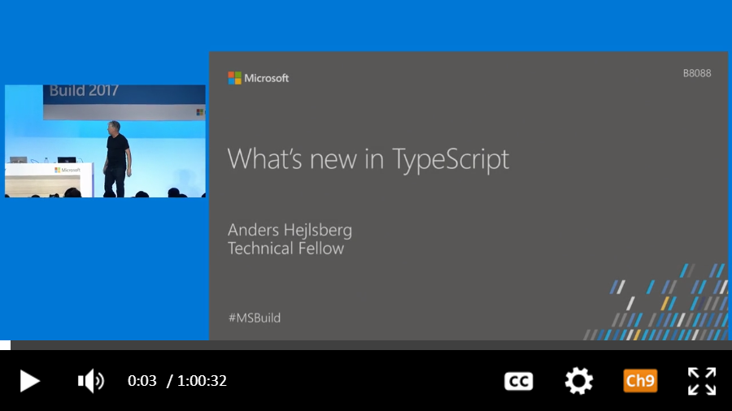

Help shape the future of TypeScript by joining our community today
and send us pull requests via our GitHub repository!

Starts and ends with JavaScript
TypeScript starts from the same syntax and semantics that millions of JavaScript developers know today. Use existing JavaScript code, incorporate popular JavaScript libraries, and call TypeScript code from JavaScript.
TypeScript compiles to clean, simple JavaScript code which runs on any browser, in Node.js, or in any JavaScript engine that supports ECMAScript 3 (or newer).

Strong tools for large apps
Types enable JavaScript developers to use highly-productive development tools and practices like static checking and code refactoring when developing JavaScript applications.
Types are optional, and type inference allows a few type annotations to make a big difference to the static verification of your code. Types let you define interfaces between software components and gain insights into the behavior of existing JavaScript libraries.

State of the art JavaScript
TypeScript offers support for the latest and evolving JavaScript features, including those from ECMAScript 2015 and future proposals, like async functions and decorators, to help build robust components.
These features are available at development time for high-confidence app development, but are compiled into simple JavaScript that targets ECMAScript 3 (or newer) environments.
Get TypeScript
Node.js
The command-line TypeScript compiler can be installed as a Node.js package.
- Install
- npm install -g typescript
- Compile
- tsc helloworld.ts
Visual Studio
See TypeScript in Action
{% comment %}{% endcomment %} Open Source
TypeScript is being developed on GitHub. The TypeScript compiler is implemented in TypeScript and can be used in any JavaScript host.
Join the #typescript Twitter discussion and follow the GitHub project.
Why TypeScript?
See more friends of TypeScript